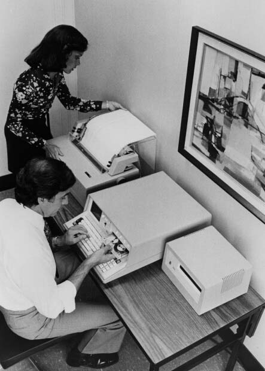
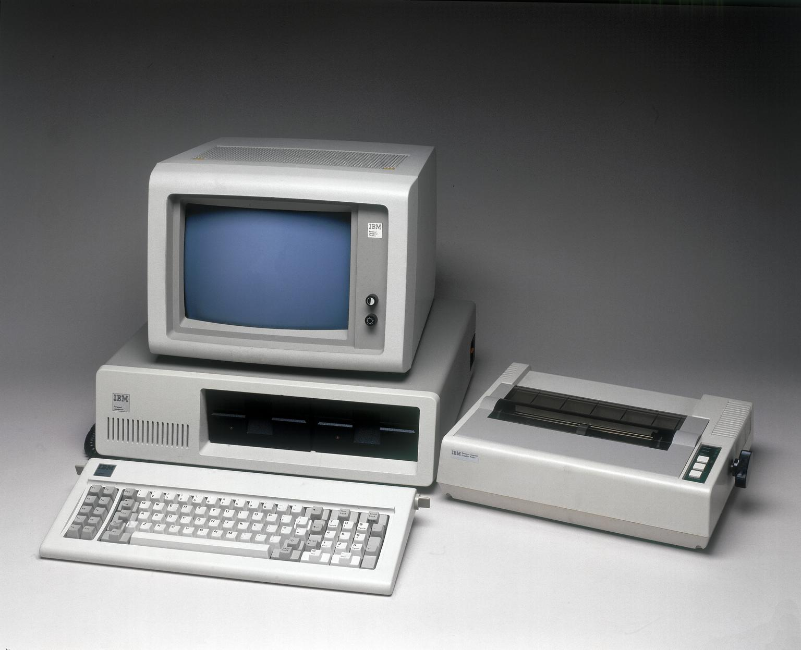
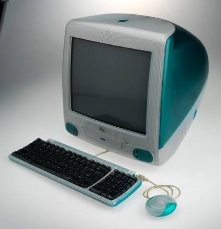
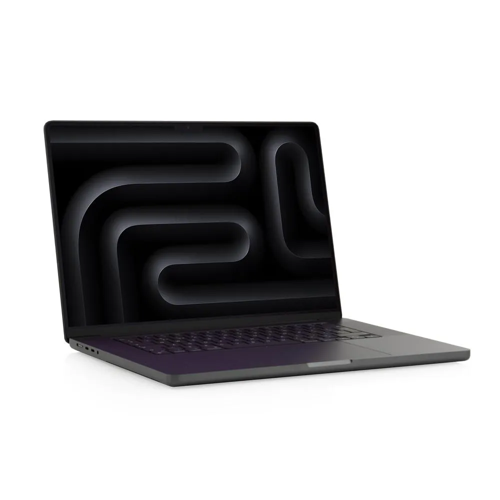
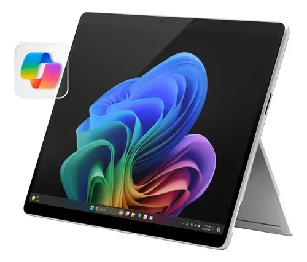

🖥️ Primera Generación (1971 - 1980)

Las primeras computadoras personales eran grandes, costosas y tenían poca capacidad de almacenamiento. Eran usadas principalmente por empresas y universidades.
- Características:
- 🔹 Usaban cintas magnéticas
- 🔹 Tenían pantallas pequeñas
- 🔹 Solo expertos podían usarlas
🖥️ Segunda Generación (1981 - 1990)

Aparecen las primeras PC con sistema operativo MS-DOS y el mouse. Se populariza el uso de computadores en oficinas y hogares.
- Características:
- 🔹 Primeros discos duros
- 🔹 Teclado y mouse básicos
- 🔹 Mayor almacenamiento
🖥️ Tercera Generación (1991 - 2000)

Llega la era de Windows 95, Internet y los CD-ROM. Las PC se vuelven más coloridas, rápidas y accesibles para el público general.
- Características:
- 🔹 Procesadores más rápidos
- 🔹 Gráficos mejorados
- 🔹 Conexión a Internet
🖥️ Cuarta Generación (2001 - 2010)

Aparecen las laptops, WiFi, redes sociales y el almacenamiento en la nube. Las PC se vuelven portátiles y más potentes.
- Características:
- 🔹 Computadores portátiles
- 🔹 Conexión inalámbrica
- 🔹 Mayor capacidad de almacenamiento
🖥️ Quinta Generación (2011 - actualidad)

La era de las tabletas, pantallas táctiles, inteligencia artificial y computación en la nube. Las PC son ultrafinas y potentes.
- Características:
- 🔹 Pantallas táctiles
- 🔹 Reconocimiento de voz
- 🔹 Inteligencia artificial
🎮 ¡PON A PRUEBA TU CONOCIMIENTO!
Une cada característica con su generación correcta:
👨🏫 Guía para el docente
¿Cómo usar este museo en clase?
- Exploración libre (15 min): Deja que los estudiantes naveguen por las generaciones a su propio ritmo.
- Juego interactivo (10 min): Pide que jueguen en parejas o grupos para reforzar lo aprendido.
- Actividad en clase (10 min): Que dibujen cómo creen que serán las PC del futuro.
Objetivos de aprendizaje:
- ✅ Reconocer la evolución de las computadoras personales
- ✅ Identificar avances tecnológicos clave
- ✅ Relacionar tecnología del pasado con la actual